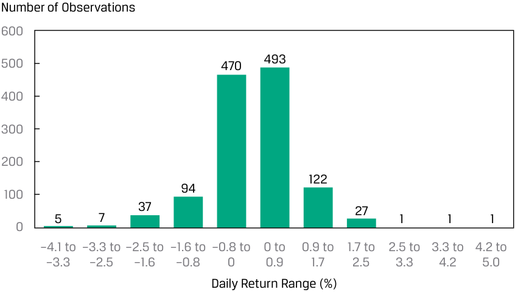
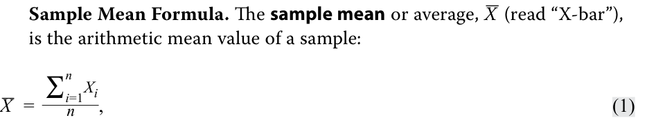
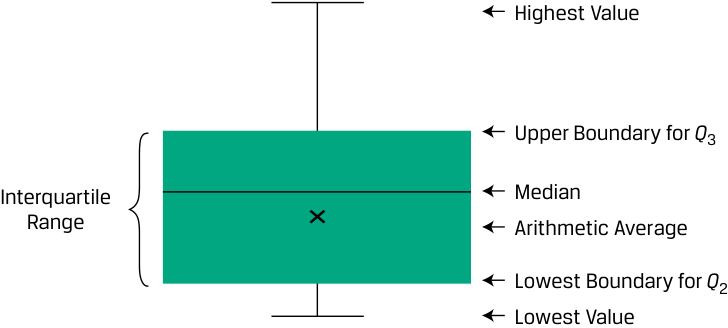
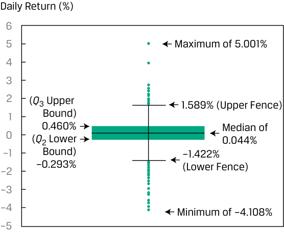
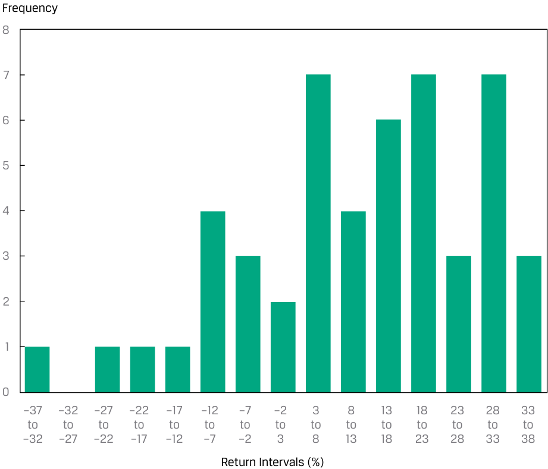
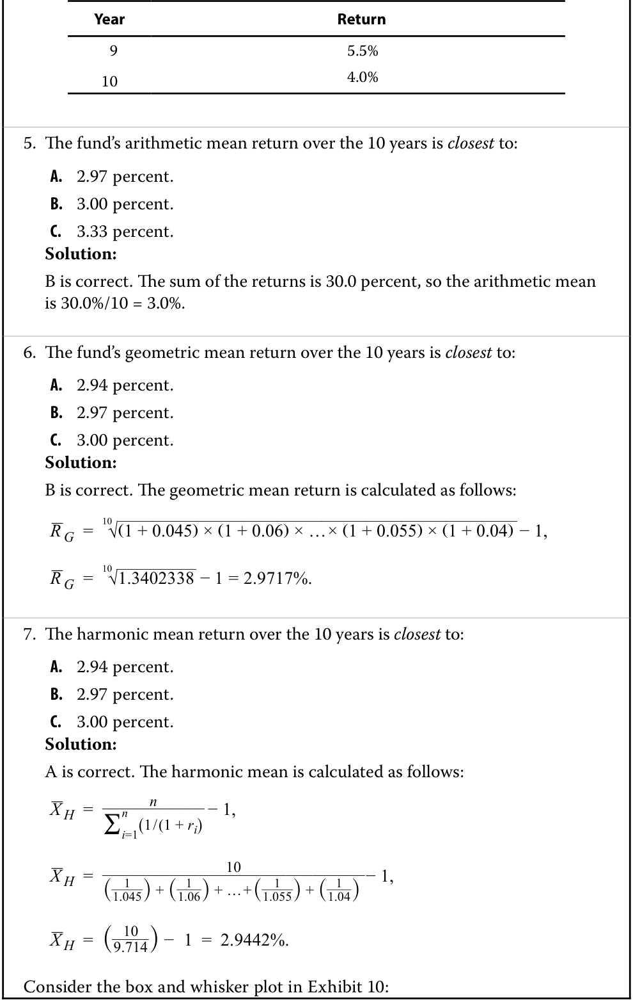

Learning Module 3 Statistical Measures of Asset Returns - Part 1: Introduction
Volume 1: Quantitative Methods
Learning Module 3 Statistical Measures of Asset Returns
Part 1/4: Introduction (PDF Pages 95–107)
Tập 1: Phương pháp Định lượng (Quantitative Methods)
Học phần 3: Các thước đo Thống kê về Tỷ suất sinh lợi Tài sản (Statistical Measures of Asset Returns)
Phần 1/4: Giới thiệu (Trang PDF 95–107)
L E A R N I N G M O D U L E 3
H Ọ C P H Ầ N 3
Statistical Measures of Asset Returns
Các thước đo Thống kê về Tỷ suất sinh lợi Tài sản (Statistical Measures of Asset Returns)
by Pamela Peterson Drake, PhD, CFA, and Wu Jian, PhD.
Tác giả: Pamela Peterson Drake, PhD, CFA, và Wu Jian, PhD.
Pamela Peterson Drake, PhD, CFA, is at James Madison University (USA). Jian Wu, PhD, is at State Street (USA).
Pamela Peterson Drake, PhD, CFA, công tác tại Đại học James Madison (Hoa Kỳ). Jian Wu, PhD, công tác tại State Street (Hoa Kỳ).
| LEARNIN |
G OUTCOMES |
|---|---|
| Mastery | The candidate should be able to: |
| calculate, interpret, and evaluate measures of central tendency and location to address an investment problem |
|
| calculate, interpret, and evaluate measures of dispersion to address an investment problem |
|
| interpret and evaluate measures of skewness and kurtosis to address an investment problem |
|
| interpret correlation between two variables to address an investment problem |
| MỤC TIÊU HỌC TẬP (LEARNING OUTCOMES) | |
|---|---|
| Mức độ thành thạo | Ứng viên cần có khả năng: |
| tính toán, diễn giải và đánh giá các thước đo xu hướng trung tâm (measures of central tendency) và vị trí (location) để giải quyết một bài toán đầu tư | |
| tính toán, diễn giải và đánh giá các thước đo độ phân tán (measures of dispersion) để giải quyết một bài toán đầu tư | |
| diễn giải và đánh giá các thước đo độ lệch (skewness) và độ nhọn (kurtosis) để giải quyết một bài toán đầu tư | |
| diễn giải hệ số tương quan (correlation) giữa hai biến số để giải quyết một bài toán đầu tư |
INTRODUCTION
GIỚI THIỆU (INTRODUCTION)
1
1
Data have always been a key input for securities analysis and investment management, allowing investors to explore and exploit an abundance of information for their investment strategies. While this data-rich environment offers potentially tremendous opportunities for investors, turning data into useful information is not so straightforward.
Dữ liệu luôn là yếu tố đầu vào then chốt cho việc phân tích chứng khoán và quản lý đầu tư, cho phép các nhà đầu tư khám phá và khai thác nguồn thông tin dồi dào cho các chiến lược đầu tư của mình. Mặc dù môi trường giàu dữ liệu này mang lại những cơ hội tiềm năng to lớn cho các nhà đầu tư, nhưng việc biến dữ liệu thành thông tin hữu ích lại không hề đơn giản.
This module provides a foundation for understanding important concepts that are an indispensable part of the analytical tool kit needed by investment practitioners, from junior analysts to senior portfolio managers. These basic concepts pave the way for more sophisticated tools that will be developed as the quantitative methods topic unfolds, which are integral to gaining competencies in the investment management techniques and asset classes that are presented later in the CFA curriculum.
Học phần này cung cấp nền tảng để hiểu các khái niệm quan trọng, vốn là một phần không thể thiếu trong bộ công cụ phân tích cần thiết cho những người hành nghề đầu tư, từ các chuyên viên phân tích cấp thấp đến các nhà quản lý danh mục đầu tư cấp cao. Những khái niệm cơ bản này mở đường cho các công cụ phức tạp hơn sẽ được phát triển xuyên suốt chủ đề phương pháp định lượng, đóng vai trò thiết yếu để đạt được năng lực trong các kỹ thuật quản lý đầu tư và các loại tài sản được trình bày ở phần sau của chương trình CFA.
This learning module focuses on how to summarize and analyze important aspects of financial returns, including key measures of central tendency, dispersion, and the shape of return distributions—specifically, skewness and kurtosis. The learning module finishes with a graphical introduction to covariance and correlation between two variables, a key concept in constructing investment portfolios to achieve diversification across assets within a portfolio.
Học phần này tập trung vào cách tóm tắt và phân tích các khía cạnh quan trọng của tỷ suất sinh lợi tài chính, bao gồm các thước đo chính về xu hướng trung tâm (central tendency), độ phân tán (dispersion), và hình dạng của phân phối tỷ suất sinh lợi—cụ thể là độ lệch (skewness) và độ nhọn (kurtosis). Học phần kết thúc bằng phần giới thiệu trực quan bằng đồ thị về hiệp phương sai (covariance) và hệ số tương quan (correlation) giữa hai biến số, một khái niệm then chốt trong việc xây dựng danh mục đầu tư nhằm đạt được sự đa dạng hóa giữa các tài sản trong danh mục.
LEARNING MODULE OVERVIEW
TỔNG QUAN HỌC PHẦN (LEARNING MODULE OVERVIEW)
-
Sample statistics—such as measures of central tendency, dispersion, skewness, and kurtosis—help with investment analysis, particularly in making probabilistic statements about returns.
-
Measures of central tendency include the mean, the median and the mode, and specify where data are centered.
-
The arithmetic mean is the sum of the observations divided by the number of observations. It is the most frequently used measure of central tendency.
-
The median is the value of the middle item of observations, or the mean of the values of the two middle items, when the items in a set are sorted into ascending or descending order. Since the median is not influenced by extreme values, it is most useful in the case of skewed distributions.
-
The mode is the most frequently observed value and is the only measure of central tendency that can be used with nominal or categorical data. A distribution may be unimodal (one mode), bimodal (two modes), trimodal (three modes), or have even more modes.
-
Quantiles, as the median, quartiles, quintiles, deciles, and percentiles, are location parameters that divide a distribution into halves, quarters, fifths, tenths, and hundredths, respectively.
-
A box and whiskers plot illustrates the distribution of a set of observations. The “box” depicts the interquartile range, the difference between the first and the third quartile. The “whiskers” outside of the “box” indicate the others measures of dispersion.
-
Dispersion measures, such as the range, mean absolute deviation (MAD), variance, standard deviation, target downside deviation, and coefficient of variation, describe the variability of outcomes around the arithmetic mean.
-
The range is the difference between the maximum value and the minimum value of the dataset. The range has only a limited usefulness because it uses information from only two observations.
-
The MAD for a sample is the average of the absolute deviations of observations from the mean.
-
The variance is the average of the squared deviations around the mean, and the standard deviation is the positive square root of variance. In computing sample variance, s2 , and sample standard deviation, s , the average squared deviation is computed using a divisor equal to the sample size minus 1.
-
The target downside deviation, or target semideviation, is a measure of the risk of being below a given target.
-
The coefficient of variation (CV) is the ratio of the standard deviation of a set of observations to their mean value. By expressing the magnitude of variation among observations relative to their average size, the CV allows for the direct comparisons of dispersion across different datasets. Reflecting the correction for scale, the CV is a scale-free measure, that is, it has no units of measurement.
-
Các thống kê mẫu (sample statistics)—chẳng hạn như các thước đo xu hướng trung tâm, độ phân tán, độ lệch và độ nhọn—hỗ trợ việc phân tích đầu tư, đặc biệt là trong việc đưa ra các nhận định xác suất về tỷ suất sinh lợi.
-
Các thước đo xu hướng trung tâm bao gồm giá trị trung bình (mean), trung vị (median) và yếu vị (mode), giúp chỉ ra vị trí trung tâm của dữ liệu.
-
Trung bình cộng (arithmetic mean) là tổng các quan sát chia cho số lượng quan sát. Đây là thước đo xu hướng trung tâm được sử dụng thường xuyên nhất.
-
Trung vị (median) là giá trị của phần tử nằm ở chính giữa tập hợp các quan sát, hoặc là trung bình cộng của hai phần tử nằm ở giữa, khi các phần tử trong tập hợp được sắp xếp theo thứ tự tăng dần hoặc giảm dần. Vì trung vị không bị ảnh hưởng bởi các giá trị cực đoan (extreme values), nên nó hữu ích nhất trong trường hợp các phân phối bị lệch (skewed distributions).
-
Yếu vị (mode) là giá trị được quan sát thường xuyên nhất và là thước đo xu hướng trung tâm duy nhất có thể sử dụng với dữ liệu định danh (nominal data) hoặc dữ liệu phân loại (categorical data). Một phân phối có thể có một đỉnh (unimodal – một yếu vị), hai đỉnh (bimodal – hai yếu vị), ba đỉnh (trimodal – ba yếu vị), hoặc thậm chí nhiều yếu vị hơn.
-
Các phân vị (quantiles), chẳng hạn như trung vị (median), tứ phân vị (quartiles), ngũ phân vị (quintiles), thập phân vị (deciles) và bách phân vị (percentiles), là các tham số vị trí chia một phân phối thành các phần bằng nhau tương ứng là hai phần, bốn phần, năm phần, mười phần và một trăm phần.
-
Biểu đồ hộp và râu (box and whiskers plot) minh họa sự phân phối của một tập hợp các quan sát. Phần “hộp” (box) biểu thị khoảng tứ phân vị (interquartile range), tức là chênh lệch giữa tứ phân vị thứ nhất và tứ phân vị thứ ba. Phần “râu” (whiskers) bên ngoài “hộp” cho biết các thước đo độ phân tán khác.
-
Các thước đo độ phân tán (dispersion measures), chẳng hạn như khoảng biến thiên (range), độ lệch tuyệt đối trung bình (mean absolute deviation – MAD), phương sai (variance), độ lệch chuẩn (standard deviation), độ lệch dưới mục tiêu (target downside deviation), và hệ số biến thiên (coefficient of variation), mô tả mức độ biến thiên của các kết quả xung quanh giá trị trung bình cộng.
-
Khoảng biến thiên (range) là chênh lệch giữa giá trị lớn nhất và giá trị nhỏ nhất của tập dữ liệu. Khoảng biến thiên chỉ có tính hữu ích hạn chế vì nó chỉ sử dụng thông tin từ hai quan sát.
-
Độ lệch tuyệt đối trung bình (MAD) của một mẫu là trung bình cộng của các độ lệch tuyệt đối của các quan sát so với giá trị trung bình.
-
Phương sai (variance) là trung bình của các bình phương độ lệch xung quanh giá trị trung bình, và độ lệch chuẩn (standard deviation) là căn bậc hai dương của phương sai. Khi tính phương sai mẫu, $s^2$, và độ lệch chuẩn mẫu, $s$, bình phương độ lệch trung bình được tính bằng cách sử dụng mẫu số bằng kích thước mẫu trừ đi 1 ($n - 1$).
-
Độ lệch dưới mục tiêu (target downside deviation), hay bán độ lệch mục tiêu (target semideviation), là thước đo rủi ro khi kết quả thấp hơn một mức mục tiêu nhất định.
-
Hệ số biến thiên (coefficient of variation – CV) là tỷ số giữa độ lệch chuẩn của một tập hợp các quan sát với giá trị trung bình của chúng. Bằng cách biểu thị độ lớn của sự biến thiên giữa các quan sát tương ứng với quy mô trung bình của chúng, CV cho phép so sánh trực tiếp độ phân tán giữa các tập dữ liệu khác nhau. Phản ánh việc điều chỉnh theo quy mô, CV là một thước đo không phụ thuộc vào quy mô (scale-free measure), nghĩa là nó không có đơn vị đo lường.
-
Skewness describes the degree to which a distribution is asymmetric about its mean. An asset return distribution with positive skewness has frequent small losses and a few extreme gains compared to a normal distribution. An asset return distribution with negative skewness has frequent small gains and a few extreme losses compared to a normal distribution. Zero skewness indicates a symmetric distribution of returns.
-
Kurtosis measures the combined weight of the tails of a distribution relative to the rest of the distribution. A distribution with fatter tails than the normal distribution is referred to as fat-tailed (leptokurtic); a distribution with thinner tails than the normal distribution is referred to as thin-tailed (platykurtic). The kurtosis of a normal distribution is 3.
-
The correlation coefficient measures the association between two variables. It is the ratio of covariance to the product of the two variables’ standard deviations. A positive correlation coefficient indicates that the two variables tend to move together, whereas a negative coefficient indicates that the two variables tend to move in opposite directions. Correlation does not imply causation, simply association. Issues that arise in evaluating correlation include the presence of outliers and spurious correlation.
-
Độ lệch (skewness) mô tả mức độ bất đối xứng của một phân phối xung quanh giá trị trung bình của nó. Một phân phối tỷ suất sinh lợi tài sản có độ lệch dương (positive skewness) có nhiều khoản lỗ nhỏ thường xuyên và một vài khoản lãi cực lớn so với phân phối chuẩn (normal distribution). Một phân phối tỷ suất sinh lợi tài sản có độ lệch âm (negative skewness) có nhiều khoản lãi nhỏ thường xuyên và một vài khoản lỗ cực lớn so với phân phối chuẩn. Độ lệch bằng không cho thấy một phân phối tỷ suất sinh lợi đối xứng.
-
Độ nhọn (kurtosis) đo lường trọng lượng kết hợp của hai phần đuôi của một phân phối so với phần còn lại của phân phối đó. Một phân phối có đuôi dày hơn phân phối chuẩn được gọi là phân phối đuôi dày hay nhọn (fat-tailed / leptokurtic); một phân phối có đuôi mỏng hơn phân phối chuẩn được gọi là phân phối đuôi mỏng hay bẹt (thin-tailed / platykurtic). Độ nhọn của phân phối chuẩn bằng 3.
-
Hệ số tương quan (correlation coefficient) đo lường mối liên hệ giữa hai biến số. Đó là tỷ số giữa hiệp phương sai (covariance) với tích độ lệch chuẩn của hai biến số đó. Hệ số tương quan dương cho biết hai biến số có xu hướng biến động cùng chiều, trong khi hệ số âm cho biết hai biến số có xu hướng biến động ngược chiều. Tương quan không hàm ý quan hệ nhân quả (causation), mà chỉ đơn thuần là sự liên kết (association). Các vấn đề phát sinh khi đánh giá tương quan bao gồm sự hiện diện của các giá trị ngoại lai (outliers) và tương quan giả mạo (spurious correlation).
MEASURES OF CENTRAL TENDENCY AND LOCATION
CÁC THƯỚC ĐO XU HƯỚNG TRUNG TÂM VÀ VỊ TRÍ (MEASURES OF CENTRAL TENDENCY AND LOCATION)
2
2
calculate, interpret, and evaluate measures of central tendency and location to address an investment problem
tính toán, diễn giải và đánh giá các thước đo xu hướng trung tâm và vị trí để giải quyết một bài toán đầu tư
In this lesson, our focus is on measures of central tendency and other measures of location. A measure of central tendency specifies where the data are centered. For a return series, a measure of central tendency shows where the empirical distribution of returns is centered, essentially a measure of the “expected” return based on the observed sample. Measures of location , mean, the median , and the mode include not only measures of central tendency but also other measures that illustrate other aspects of the location or distribution of the data.
Trong bài học này, trọng tâm của chúng ta là các thước đo xu hướng trung tâm và các thước đo vị trí khác. Một thước đo xu hướng trung tâm (measure of central tendency) chỉ ra nơi dữ liệu tập trung. Đối với một chuỗi tỷ suất sinh lợi, thước đo xu hướng trung tâm cho thấy nơi phân phối thực nghiệm của tỷ suất sinh lợi tập trung, về bản chất là một thước đo tỷ suất sinh lợi “kỳ vọng” dựa trên mẫu quan sát được. Các thước đo vị trí (measures of location), bao gồm giá trị trung bình (mean), trung vị (median), và yếu vị (mode), không chỉ bao gồm các thước đo xu hướng trung tâm mà còn cả các thước đo khác minh họa những khía cạnh khác về vị trí hoặc sự phân phối của dữ liệu.
Frequency distributions, histograms, and contingency tables provide a convenient way to summarize a series of observations on an asset’s returns as a first step toward describing the data. For example, a histogram for the frequency distribution of the daily returns for the fictitious EAA Equity Index over the past five years is shown in Exhibit 1.
Phân phối tần số (frequency distributions), biểu đồ tần số (histograms), và bảng ngẫu nhiên (contingency tables) cung cấp một cách thuận tiện để tóm tắt một chuỗi các quan sát về tỷ suất sinh lợi của một tài sản như một bước đầu tiên hướng tới việc mô tả dữ liệu. Ví dụ, biểu đồ tần số cho phân phối tần số của tỷ suất sinh lợi hàng ngày đối với Chỉ số Cổ phiếu EAA (EAA Equity Index) giả định trong năm năm qua được thể hiện trong Bảng minh họa 1 (Exhibit 1).
Exhibit 1: Histogram of Daily Returns on the EAA Equity Index
Bảng minh họa 1: Biểu đồ tần số Tỷ suất sinh lợi Hàng ngày của Chỉ số Cổ phiếu EAA (Histogram of Daily Returns on the EAA Equity Index)

Chú thích hình ảnh: - Trục tung: Số lượng quan sát (Number of Observations) từ 0 đến 600. - Trục hoành: Khoảng tỷ suất sinh lợi hàng ngày (Daily Return Range (%)) từ –4.1 đến 5.0.
Measures of Central Tendency
Các thước đo Xu hướng Trung tâm (Measures of Central Tendency)
The Arithmetic Mean
_Trung bình cộng (The Arithmetic Mean)_
Analysts and portfolio managers often want one number that describes a representative possible outcome of an investment decision. The arithmetic mean is one of the most frequently used measures of central tendency.
Các chuyên viên phân tích và nhà quản lý danh mục đầu tư thường muốn có một con số duy nhất mô tả kết quả đại diện có thể xảy ra của một quyết định đầu tư. Trung bình cộng là một trong những thước đo xu hướng trung tâm được sử dụng thường xuyên nhất.
Arithmetic Mean. The arithmetic mean is the sum of the values of the observations in a dataset divided by the number of observations.
Trung bình cộng (Arithmetic Mean). Trung bình cộng (arithmetic mean) là tổng giá trị của các quan sát trong một tập dữ liệu chia cho số lượng các quan sát.
The Sample Mean
_Trung bình mẫu (The Sample Mean)_
The sample mean is the arithmetic mean, or arithmetic average, computed for a sample.
Trung bình mẫu là trung bình cộng được tính cho một mẫu.

where n is the number of observations in the sample.
trong đó $\bar{X}$ (đọc là “X-ngang” / “X-bar”) là giá trị trung bình cộng của một mẫu, và $n$ là số lượng quan sát trong mẫu.
A property and potential drawback of the arithmetic mean is its sensitivity to extreme values, or outliers. Because all observations are used to compute the mean and are given equal weight (i.e., importance), the arithmetic mean can be pulled sharply upward or downward by extremely large or small observations, respectively. The most common approach in this situation is to report the median, or middle value, in place of or in addition to the mean.
Một đặc tính và cũng là nhược điểm tiềm ẩn của trung bình cộng là sự nhạy cảm của nó với các giá trị cực đoan, hay các giá trị ngoại lai (outliers). Bởi vì tất cả các quan sát đều được sử dụng để tính giá trị trung bình và được gán trọng số (tức mức độ quan trọng) bằng nhau, nên trung bình cộng có thể bị kéo tăng vọt lên hoặc giảm mạnh xuống bởi các quan sát cực lớn hoặc cực nhỏ tương ứng. Cách tiếp cận phổ biến nhất trong tình huống này là báo cáo giá trị trung vị (median), hay giá trị ở giữa, để thay thế hoặc bổ sung cho giá trị trung bình.
The Median
_Trung vị (The Median)_
A second important measure of central tendency is the median.
Một thước đo quan trọng thứ hai của xu hướng trung tâm là trung vị.
Definition of Median. The median is the value of the middle item of a dataset that has been sorted into ascending or descending order. In an odd-numbered sample of n observations, the median is the value of the
Định nghĩa Trung vị (Definition of Median). Trung vị là giá trị của phần tử nằm ở chính giữa của một tập dữ liệu đã được sắp xếp theo thứ tự tăng dần hoặc giảm dần. Trong một mẫu có số lượng quan sát $n$ là số lẻ, trung vị là giá trị của
observation that occupies the ( n + 1)/2 position. In an even-numbered sample, we define the median as the mean of the values of the observations occupying the n /2 and ( n + 2)/2 positions (the two middle observations).
quan sát chiếm vị trí thứ $(n + 1)/2$. Trong một mẫu có số lượng quan sát là số chẵn, chúng ta định nghĩa trung vị là trung bình cộng của giá trị các quan sát chiếm vị trí thứ $n/2$ và $(n + 2)/2$ (hai quan sát nằm ở chính giữa).
Whether we use the calculation for an even- or odd-numbered sample, an equal number of observations lie above and below the median. A distribution has only one median. A potential advantage of the median is that, unlike the mean, outliers do not affect it.
Cho dù chúng ta sử dụng phép tính cho mẫu có số lượng chẵn hay lẻ, luôn có một số lượng quan sát bằng nhau nằm phía trên và phía dưới trung vị. Một phân phối chỉ có duy nhất một trung vị. Một ưu điểm tiềm năng của trung vị là, không giống như trung bình cộng, các giá trị ngoại lai không làm ảnh hưởng đến nó.
The median, however, does not use all the information about the size of the observations; it focuses only on the relative position of the ranked observations. Calculating the median may also be more complex. Mathematicians express this disadvantage by saying that the median is less mathematically tractable than the mean.
Tuy nhiên, trung vị không sử dụng toàn bộ thông tin về độ lớn của các quan sát; nó chỉ tập trung vào vị trí tương đối của các quan sát đã được xếp hạng. Việc tính toán trung vị cũng có thể phức tạp hơn. Các nhà toán học diễn đạt nhược điểm này bằng cách nói rằng trung vị khó xử lý về mặt toán học (less mathematically tractable) hơn so với giá trị trung bình.
The Mode
_Yếu vị (The Mode)_
A third important measure of central tendency is the mode.
Một thước đo quan trọng thứ ba của xu hướng trung tâm là yếu vị.
Definition of Mode. The mode is the most frequently occurring value in a dataset. A dataset can have more than one mode, or even no mode. When a dataset has a single value that is observed most frequently, its distribution is said to be unimodal . If a dataset has two most frequently occurring values, then it has two modes and its distribution is referred to as bimodal . When all the values in a dataset are different, the distribution has no mode because no value occurs more frequently than any other value.
Định nghĩa Yếu vị (Definition of Mode). Yếu vị là giá trị xuất hiện thường xuyên nhất trong một tập dữ liệu. Một tập dữ liệu có thể có nhiều hơn một yếu vị, hoặc thậm chí không có yếu vị nào. Khi một tập dữ liệu có một giá trị duy nhất được quan sát thường xuyên nhất, phân phối của nó được gọi là phân phối một đỉnh (unimodal). Nếu một tập dữ liệu có hai giá trị xuất hiện thường xuyên nhất ngang nhau, thì nó có hai yếu vị và phân phối của nó được gọi là phân phối hai đỉnh (bimodal). Khi tất cả các giá trị trong một tập dữ liệu đều khác nhau, phân phối đó không có yếu vị vì không có giá trị nào xuất hiện thường xuyên hơn bất kỳ giá trị nào khác.
Stock return data and other data from continuous distributions may not have a modal outcome. Exhibit 2 presents the frequency distribution of the daily returns for the EAA Equity Index over the past five years.
Dữ liệu tỷ suất sinh lợi cổ phiếu và các dữ liệu khác từ các phân phối liên tục (continuous distributions) có thể không có một kết quả yếu vị riêng lẻ. Bảng minh họa 2 trình bày phân phối tần số của tỷ suất sinh lợi hàng ngày đối với Chỉ số Cổ phiếu EAA trong năm năm qua.
Exhibit 2: Frequency Distribution for Daily Returns of EAA Equity Index
Bảng minh họa 2: Phân phối Tần số cho Tỷ suất sinh lợi Hàng ngày của Chỉ số Cổ phiếu EAA (Frequency Distribution for Daily Returns of EAA Equity Index)
| Return Bin (%) | Absolute Frequency |
Relative Frequency (%) |
Cumulative Absolute Frequency |
Cumulative Relative Frequency (%) |
|---|---|---|---|---|
| −5.0 to −4.0 | 1 | 0.08 | 1 | 0.08 |
| −4.0 to −3.0 | 7 | 0.56 | 8 | 0.64 |
| −3.0 to −2.0 | 23 | 1.83 | 31 | 2.46 |
| −2.0 to −1.0 | 77 | 6.12 | 108 | 8.59 |
| −1.0 to 0.0 | 470 | 37.36 | 578 | 45.95 |
| 0.0 to 1.0 | 555 | 44.12 | 1,133 | 90.06 |
| 1.0 to 2.0 | 110 | 8.74 | 1,243 | 98.81 |
| 2.0 to 3.0 | 13 | 1.03 | 1,256 | 99.84 |
| 3.0 to 4.0 | 1 | 0.08 | 1,257 | 99.92 |
| 4.0 to 5.0 | 1 | 0.08 | 1,258 | 100.00 |
| Khoảng tỷ suất sinh lợi (Return Bin) (%) | Tần số tuyệt đối (Absolute Frequency) | Tần số tương đối (Relative Frequency) (%) | Tần số tuyệt đối tích lũy (Cumulative Absolute Frequency) | Tần số tương đối tích lũy (Cumulative Relative Frequency) (%) |
|---|---|---|---|---|
| −5.0 đến −4.0 | 1 | 0.08 | 1 | 0.08 |
| −4.0 đến −3.0 | 7 | 0.56 | 8 | 0.64 |
| −3.0 đến −2.0 | 23 | 1.83 | 31 | 2.46 |
| −2.0 đến −1.0 | 77 | 6.12 | 108 | 8.59 |
| −1.0 đến 0.0 | 470 | 37.36 | 578 | 45.95 |
| 0.0 đến 1.0 | 555 | 44.12 | 1,133 | 90.06 |
| 1.0 đến 2.0 | 110 | 8.74 | 1,243 | 98.81 |
| 2.0 đến 3.0 | 13 | 1.03 | 1,256 | 99.84 |
| 3.0 đến 4.0 | 1 | 0.08 | 1,257 | 99.92 |
| 4.0 đến 5.0 | 1 | 0.08 | 1,258 | 100.00 |
A histogram for the frequency distribution of these daily returns was shown in Exhibit 1. The modal interval always has the highest bar in the histogram; in this case, the modal interval is 0.0 to 1.0 percent, and this interval has 555 observations out of a total of 1,258 observations.
Biểu đồ tần số cho phân phối tần số của các tỷ suất sinh lợi hàng ngày này đã được thể hiện trong Bảng minh họa 1. Khoảng yếu vị (modal interval) luôn có cột cao nhất trong biểu đồ tần số; trong trường hợp này, khoảng yếu vị là từ 0.0 đến 1.0 phần trăm, và khoảng này có 555 quan sát trên tổng số 1,258 quan sát.
Dealing with Outliers
Xử lý các Giá trị Ngoại lai (Dealing with Outliers)
In practice, although an extreme value or outlier in a financial dataset may represent a rare value in the population, it may also reflect an error in recording the value of an observation or an observation generated from a different population. After having checked and eliminated errors, we can address what to do with extreme values in the sample.
Trong thực tế, mặc dù một giá trị cực đoan hay giá trị ngoại lai (outlier) trong một tập dữ liệu tài chính có thể đại diện cho một giá trị hiếm gặp trong tổng thể, nhưng nó cũng có thể phản ánh một sai sót trong việc ghi chép giá trị của một quan sát hoặc một quan sát được tạo ra từ một tổng thể khác. Sau khi đã kiểm tra và loại bỏ các sai sót, chúng ta có thể giải quyết vấn đề cần làm gì với các giá trị cực đoan trong mẫu.
When dealing with a sample that has extreme values, there may be a possibility of transforming the variable (e.g., a log transformation) or of selecting another variable that achieves the same purpose. If, however, alternative model specifications or variable transformations are not possible, then three options exist for dealing with extreme values:
Khi xử lý một mẫu có các giá trị cực đoan, có thể có khả năng biến đổi biến số (ví dụ: biến đổi logarit) hoặc chọn một biến số khác đạt được cùng mục đích. Tuy nhiên, nếu các dạng thức mô hình thay thế hoặc việc biến đổi biến số là không khả thi, thì có ba lựa chọn để xử lý các giá trị cực đoan:
Option 1 Do nothing; use the data without any adjustment.
Lựa chọn 1 Không làm gì cả; sử dụng dữ liệu mà không có bất kỳ sự điều chỉnh nào.
Option 2 Delete all the outliers.
Lựa chọn 2 Xóa bỏ tất cả các giá trị ngoại lai.
Option 3 Replace the outliers with another value.
Lựa chọn 3 Thay thế các giá trị ngoại lai bằng một giá trị khác.
The first option is appropriate if the values are legitimate, correct observations, and it is important to reflect the whole of the sample distribution. Because outliers may contain meaningful information, excluding or altering these values may reduce valuable information. Further, because identifying a data point as extreme leaves it up to the judgment of the analyst, leaving in all observations eliminates that need to judge a value as extreme.
Lựa chọn đầu tiên là phù hợp nếu các giá trị đó là những quan sát hợp lệ, chính xác, và việc phản ánh toàn bộ phân phối mẫu là rất quan trọng. Bởi vì các giá trị ngoại lai có thể chứa đựng thông tin có ý nghĩa, việc loại trừ hoặc thay đổi các giá trị này có thể làm giảm bớt thông tin có giá trị. Hơn nữa, vì việc xác định một điểm dữ liệu là cực đoan phụ thuộc vào phán đoán của chuyên viên phân tích, nên việc giữ lại tất cả các quan sát sẽ loại bỏ nhu cầu phải phán đoán xem một giá trị có phải là cực đoan hay không.
The second option excludes the extreme observations. One measure of central tendency in this case is the trimmed mean , which is computing an arithmetic mean after excluding a stated small percentage of the lowest and highest values. For example, a 5 percent trimmed mean discards the lowest 2.5 percent and the highest 2.5 percent of values and computes the mean of the remaining 95 percent of values. A trimmed mean is used in sports competitions when judges’ lowest and highest scores are discarded in computing a contestant’s score.
Lựa chọn thứ hai loại trừ các quan sát cực đoan. Một thước đo xu hướng trung tâm trong trường hợp này là trung bình cắt bỏ (trimmed mean), tức là tính trung bình cộng sau khi đã loại trừ một tỷ lệ phần trăm nhỏ nhất định các giá trị thấp nhất và cao nhất. Ví dụ, một trung bình cắt bỏ 5 phần trăm sẽ loại bỏ 2.5 phần trăm giá trị thấp nhất và 2.5 phần trăm giá trị cao nhất, rồi tính trung bình của 95 phần trăm giá trị còn lại. Trung bình cắt bỏ được sử dụng trong các cuộc thi đấu thể thao khi điểm số thấp nhất và cao nhất của các giám khảo bị loại bỏ khi tính điểm cho một thí sinh.
The third option involves substituting values for the extreme values. A measure of central tendency in this case is the winsorized mean . It is calculated after assigning one specified low value to a stated percentage of the lowest values in the dataset and one specified high value to a stated percentage of the highest values in the dataset. For example, a 95 percent winsorized mean sets the bottom 2.5 percent of values in the dataset equal to the value at or below which 2.5 percent of all the values lie (as will be seen shortly, this is called the “2.5th percentile” value) and the top 2.5 percent of values in the dataset equal to the value at or below which 97.5 percent of all the values lie (the “97.5th percentile” value).
Lựa chọn thứ ba liên quan đến việc thay thế các giá trị khác cho các giá trị cực đoan. Một thước đo xu hướng trung tâm trong trường hợp này là trung bình Winsor (winsorized mean). Nó được tính sau khi gán một giá trị thấp xác định cho một tỷ lệ phần trăm nhất định các giá trị thấp nhất trong tập dữ liệu và một giá trị cao xác định cho một tỷ lệ phần trăm nhất định các giá trị cao nhất trong tập dữ liệu. Ví dụ, trung bình Winsor 95 phần trăm sẽ đặt 2.5 phần trăm giá trị thấp nhất trong tập dữ liệu bằng với giá trị mà tại đó hoặc thấp hơn đó có 2.5 phần trăm tổng số các giá trị nằm (như sẽ thấy ngay sau đây, giá trị này được gọi là giá trị “bách phân vị thứ 2.5” – “2.5th percentile”), và đặt 2.5 phần trăm giá trị cao nhất trong tập dữ liệu bằng với giá trị mà tại đó hoặc thấp hơn đó có 97.5 phần trăm tổng số các giá trị nằm (giá trị “bách phân vị thứ 97.5” – “97.5th percentile”).
Often comparing the statistical measures of datasets with outliers included and with outliers excluded can reveal important insights about the dataset. Such comparison can be particularly helpful when investors analyze the behavior of asset returns and rate, price, spread and volume changes.
Thông thường, việc so sánh các thước đo thống kê của các tập dữ liệu khi bao gồm các giá trị ngoại lai và khi loại trừ các giá trị ngoại lai có thể hé lộ những hiểu biết quan trọng về tập dữ liệu đó. Sự so sánh như vậy có thể đặc biệt hữu ích khi các nhà đầu tư phân tích hành vi của tỷ suất sinh lợi tài sản cũng như những thay đổi về lãi suất, giá cả, chênh lệch (spread) và khối lượng giao dịch.
In Example 1, we show the differences among these options for handling outliers using daily returns for the fictitious Euro-Asia-Africa (EAA) Equity Index in Exhibit 2.
Trong Ví dụ 1, chúng ta chỉ ra sự khác biệt giữa các lựa chọn xử lý giá trị ngoại lai này bằng cách sử dụng tỷ suất sinh lợi hàng ngày của Chỉ số Cổ phiếu Âu-Á-Phi (Euro-Asia-Africa – EAA) giả định trong Bảng minh họa 2.
EXAMPLE 1
VÍ DỤ 1
Handling Outliers: Daily Returns to an Index
Xử lý các Giá trị Ngoại lai: Tỷ suất sinh lợi Hàng ngày của một Chỉ số (Handling Outliers: Daily Returns to an Index)
Using daily returns on the EAA Equity Index for the past five years, consisting of 1,258 trading days, we can see the effect of trimming and winsorizing the data:
Sử dụng tỷ suất sinh lợi hàng ngày của Chỉ số Cổ phiếu EAA trong năm năm qua, bao gồm 1,258 ngày giao dịch, chúng ta có thể thấy tác động của việc cắt bỏ (trimming) và chuẩn hóa Winsor (winsorizing) dữ liệu:
Exhibit 3: Effect of Trimming and Winsorizing
Bảng minh họa 3: Tác động của việc Cắt bỏ và Chuẩn hóa Winsor (Effect of Trimming and Winsorizing)
| Trimmed Mean | Winsorized Mean | ||
|---|---|---|---|
| Arithmetic Mean | (Trimmed 5%) | (95%) | |
| Mean | 0.035% | 0.048% | 0.038% |
| Number of | |||
| Observations | 1,258 | 1,194 | 1,258 |
| Trung bình cộng (Arithmetic Mean) | Trung bình cắt bỏ (Trimmed Mean) (Cắt bỏ 5%) | Trung bình Winsor (Winsorized Mean) (95%) | |
|---|---|---|---|
| Giá trị trung bình (Mean) | 0.035% | 0.048% | 0.038% |
| Số lượng quan sát (Number of Observations) | 1,258 | 1,194 | 1,258 |
The trimmed mean eliminates the lowest 2.5 percent of returns, which in this sample is any daily return less than −1.934 percent, and it eliminates the highest 2.5 percent, which in this sample is any daily return greater than 1.671 percent. The result of this trimming is that the mean is calculated using 1,194 observations instead of the original sample’s 1,258 observations.
Trung bình cắt bỏ loại bỏ 2.5 phần trăm tỷ suất sinh lợi thấp nhất, trong mẫu này là bất kỳ tỷ suất sinh lợi hàng ngày nào nhỏ hơn −1.934 phần trăm, và loại bỏ 2.5 phần trăm cao nhất, trong mẫu này là bất kỳ tỷ suất sinh lợi hàng ngày nào lớn hơn 1.671 phần trăm. Kết quả của việc cắt bỏ này là giá trị trung bình được tính bằng cách sử dụng 1,194 quan sát thay vì 1,258 quan sát của mẫu ban đầu.
The winsorized mean substitutes a return of −1.934 percent (the 2.5 percentile value) for any observation below −1.934 and substitutes a return of 1.671 percent (the 97.5 percentile value) for any observation above 1.671. The result in this case is that the trimmed and winsorized means are higher than the arithmetic mean, suggesting the potential evidence of significant negative returns in the observed daily return distribution.
Trung bình Winsor thay thế mức tỷ suất sinh lợi −1.934 phần trăm (giá trị bách phân vị thứ 2.5) cho bất kỳ quan sát nào dưới −1.934 và thay thế mức tỷ suất sinh lợi 1.671 phần trăm (giá trị bách phân vị thứ 97.5) cho bất kỳ quan sát nào trên 1.671. Kết quả trong trường hợp này là trung bình cắt bỏ và trung bình Winsor đều cao hơn trung bình cộng, cho thấy bằng chứng tiềm năng về sự xuất hiện của các mức tỷ suất sinh lợi âm đáng kể trong phân phối tỷ suất sinh lợi hàng ngày quan sát được.
Measures of Location
Các thước đo Vị trí (Measures of Location)
Having discussed measures of central tendency, we now examine an approach to describing the location of data that involves identifying values at or below which specified proportions of the data lie. For example, establishing that 25 percent, 50 percent, and 75 percent of the annual returns on a portfolio provides concise information about the distribution of portfolio returns. Statisticians use the word quantile as the most general term for a value at or below which a stated fraction of the data lies. In the following section, we describe the most commonly used quantiles—quartiles, quintiles, deciles, and percentiles—and their application in investments.
Sau khi đã thảo luận về các thước đo xu hướng trung tâm, bây giờ chúng ta xem xét một cách tiếp cận để mô tả vị trí của dữ liệu liên quan đến việc xác định các giá trị mà tại đó hoặc thấp hơn đó có những tỷ lệ xác định của dữ liệu nằm. Ví dụ, việc xác định các mức mà dưới đó có 25 phần trăm, 50 phần trăm, và 75 phần trăm tỷ suất sinh lợi hàng năm của một danh mục đầu tư sẽ cung cấp thông tin ngắn gọn, súc tích về sự phân phối tỷ suất sinh lợi của danh mục. Các nhà thống kê sử dụng từ phân vị (quantile) làm thuật ngữ chung nhất cho một giá trị mà tại đó hoặc thấp hơn đó có một tỷ lệ xác định của dữ liệu nằm. Trong phần tiếp theo, chúng ta mô tả các phân vị được sử dụng phổ biến nhất—tứ phân vị (quartiles), ngũ phân vị (quintiles), thập phân vị (deciles), và bách phân vị (percentiles)—cùng ứng dụng của chúng trong đầu tư.
Quartiles, Quintiles, Deciles, and Percentiles
_Tứ phân vị, Ngũ phân vị, Thập phân vị và Bách phân vị (Quartiles, Quintiles, Deciles, and Percentiles)_
We know that the median divides a distribution of data in half. We can define other dividing lines that split the distribution into smaller sizes. Quartiles divide the distribution into quarters, quintiles into fifths, deciles into tenths, and percentiles into hundredths. The interquartile range (IQR) is the difference between the third quartile and the first quartile, or IQR = Q 3 − Q 1.
Chúng ta biết rằng trung vị chia một phân phối dữ liệu thành hai nửa. Chúng ta có thể định nghĩa các đường phân chia khác để tách phân phối thành các kích thước nhỏ hơn. Tứ phân vị (Quartiles) chia phân phối thành bốn phần bằng nhau, ngũ phân vị (quintiles) thành năm phần, thập phân vị (deciles) thành mười phần, và bách phân vị (percentiles) thành một trăm phần. Khoảng tứ phân vị (interquartile range – IQR) là chênh lệch giữa tứ phân vị thứ ba và tứ phân vị thứ nhất, hay $\text{IQR} = Q_3 - Q_1$.
Example 2 illustrates the calculation of various quantiles for the daily return on the EAA Equity Index.
Ví dụ 2 minh họa cách tính các phân vị khác nhau đối với tỷ suất sinh lợi hàng ngày của Chỉ số Cổ phiếu EAA.
EXAMPLE 2
VÍ DỤ 2
Percentiles, Quintiles, and Quartiles for the EAA Equity Index
Bách phân vị, Ngũ phân vị và Tứ phân vị cho Chỉ số Cổ phiếu EAA (Percentiles, Quintiles, and Quartiles for the EAA Equity Index)
Using the daily returns on the EAA Equity Index over the past five years and ranking them from lowest to highest daily return, we show the return bins from 1 (the lowest 5 percent) to 20 (the highest 5 percent) as follows:
Sử dụng tỷ suất sinh lợi hàng ngày của Chỉ số Cổ phiếu EAA trong năm năm qua và xếp hạng chúng từ tỷ suất sinh lợi hàng ngày thấp nhất đến cao nhất, chúng ta thể hiện các khoảng tỷ suất sinh lợi (return bins) từ 1 (5 phần trăm thấp nhất) đến 20 (5 phần trăm cao nhất) như sau:
Exhibit 4: EAA Equity Index Daily Returns Grouped by Size of Return
Bảng minh họa 4: Tỷ suất sinh lợi Hàng ngày của Chỉ số Cổ phiếu EAA được Nhóm theo Độ lớn của Tỷ suất sinh lợi (EAA Equity Index Daily Returns Grouped by Size of Return)
| Cumulative Percent- |
Daily Retur |
n (%) between | ||
|---|---|---|---|---|
| Bin | age of Sample Trading Days (%) |
Lower Bound |
Upper Bound | Number of Observations |
| 1 | 5 | −4.108 | −1.416 | 63 |
| 2 | 10 | −1.416 | −0.876 | 63 |
| 3 | 15 | −0.876 | −0.629 | 63 |
| 4 | 20 | −0.629 | −0.432 | 63 |
| 5 | 25 | −0.432 | −0.293 | 63 |
| 6 | 30 | −0.293 | −0.193 | 63 |
| 7 | 35 | −0.193 | −0.124 | 62 |
| 8 | 40 | −0.124 | −0.070 | 63 |
| 9 | 45 | −0.070 | −0.007 | 63 |
| 10 | 50 | −0.007 | 0.044 | 63 |
| 11 | 55 | 0.044 | 0.108 | 63 |
| 12 | 60 | 0.108 | 0.173 | 63 |
| 13 | 65 | 0.173 | 0.247 | 63 |
| 14 | 70 | 0.247 | 0.343 | 62 |
| 15 | 75 | 0.343 | 0.460 | 63 |
| 16 | 80 | 0.460 | 0.575 | 63 |
| 17 | 85 | 0.575 | 0.738 | 63 |
| 18 | 90 | 0.738 | 0.991 | 63 |
| 19 | 95 | 0.991 | 1.304 | 63 |
| 20 | 100 | 1.304 | 5.001 | 63 |
| Khoảng (Bin) | Tỷ lệ phần trăm tích lũy của số ngày giao dịch mẫu (Cumulative Percentage of Sample Trading Days) (%) | Tỷ suất sinh lợi hàng ngày (%) Cận dưới (Lower Bound) | Tỷ suất sinh lợi hàng ngày (%) Cận trên (Upper Bound) | Số lượng quan sát (Number of Observations) |
|---|---|---|---|---|
| 1 | 5 | −4.108 | −1.416 | 63 |
| 2 | 10 | −1.416 | −0.876 | 63 |
| 3 | 15 | −0.876 | −0.629 | 63 |
| 4 | 20 | −0.629 | −0.432 | 63 |
| 5 | 25 | −0.432 | −0.293 | 63 |
| 6 | 30 | −0.293 | −0.193 | 63 |
| 7 | 35 | −0.193 | −0.124 | 62 |
| 8 | 40 | −0.124 | −0.070 | 63 |
| 9 | 45 | −0.070 | −0.007 | 63 |
| 10 | 50 | −0.007 | 0.044 | 63 |
| 11 | 55 | 0.044 | 0.108 | 63 |
| 12 | 60 | 0.108 | 0.173 | 63 |
| 13 | 65 | 0.173 | 0.247 | 63 |
| 14 | 70 | 0.247 | 0.343 | 62 |
| 15 | 75 | 0.343 | 0.460 | 63 |
| 16 | 80 | 0.460 | 0.575 | 63 |
| 17 | 85 | 0.575 | 0.738 | 63 |
| 18 | 90 | 0.738 | 0.991 | 63 |
| 19 | 95 | 0.991 | 1.304 | 63 |
| 20 | 100 | 1.304 | 5.001 | 63 |
Because of the continuous nature of returns, it is not likely for a return to fall on the boundary for any bin other than the minimum (Bin = 1) and maximum (Bin = 20).
Do bản chất liên tục của tỷ suất sinh lợi, rất ít khả năng một mức tỷ suất sinh lợi rơi đúng vào ranh giới của bất kỳ khoảng (bin) nào ngoài mức tối thiểu (Bin = 1) và mức tối đa (Bin = 20).
Using the data in Exhibit 4, complete the following tasks:
Sử dụng dữ liệu trong Bảng minh họa 4, hãy hoàn thành các yêu cầu sau:
- Identify the 10th and 90th percentiles.
- Xác định bách phân vị thứ 10 và thứ 90 (10th and 90th percentiles).
Solution:
Lời giải:
The 10th and 90th percentiles correspond to the bins or ranked returns that include 10 percent and 90 percent of the daily returns, respectively. The 10th percentile corresponds to the return of −0.876 percent (and includes returns of that much and lower), and the 90th percentile corresponds to the return of 0.991 percent (and lower).
Bách phân vị thứ 10 và thứ 90 tương ứng với các khoảng hoặc các mức tỷ suất sinh lợi đã xếp hạng bao gồm lần lượt 10 phần trăm và 90 phần trăm tỷ suất sinh lợi hàng ngày. Bách phân vị thứ 10 tương ứng với mức tỷ suất sinh lợi −0.876 phần trăm (và bao gồm các mức tỷ suất sinh lợi bằng hoặc thấp hơn mức đó), và bách phân vị thứ 90 tương ứng với mức tỷ suất sinh lợi 0.991 phần trăm (và thấp hơn).
- Identify the first, second, and third quintiles.
- Xác định ngũ phân vị thứ nhất, thứ hai và thứ ba (first, second, and third quintiles).
Solution:
Lời giải:
The first quintile corresponds to the lowest 20 percent of the ranked data, or −0.432 percent (and lower). The second quintile corresponds to the lowest 40 percent of the ranked data, or −0.070 percent (and lower).
Ngũ phân vị thứ nhất tương ứng với 20 phần trăm thấp nhất của dữ liệu đã xếp hạng, tức là −0.432 phần trăm (và thấp hơn). Ngũ phân vị thứ hai tương ứng với 40 phần trăm thấp nhất của dữ liệu đã xếp hạng, tức là −0.070 phần trăm (và thấp hơn).
The third quintile corresponds to the lowest 60 percent of the ranked data, or 0.173 percent (and lower).
Ngũ phân vị thứ ba tương ứng với 60 phần trăm thấp nhất của dữ liệu đã xếp hạng, tức là 0.173 phần trăm (và thấp hơn).
- Identify the first and third quartiles.
- Xác định tứ phân vị thứ nhất và thứ ba (first and third quartiles).
Solution:
Lời giải:
The first quartile corresponds to the lowest 25 percent of the ranked data, or −0.293 percent (and lower). The third quartile corresponds to the lowest 75 percent of the ranked data, or 0.460 percent (and lower).
Tứ phân vị thứ nhất tương ứng với 25 phần trăm thấp nhất của dữ liệu đã xếp hạng, tức là −0.293 phần trăm (và thấp hơn). Tứ phân vị thứ ba tương ứng với 75 phần trăm thấp nhất của dữ liệu đã xếp hạng, tức là 0.460 phần trăm (và thấp hơn).
- Identify the median.
- Xác định trung vị (median).
Solution:
Lời giải:
The median is the return for which 50 percent of the data lies on either side, which is 0.044 percent, the highest daily return in the 10th bin out of 20.
Trung vị là mức tỷ suất sinh lợi mà có 50 phần trăm dữ liệu nằm ở mỗi phía, tức là 0.044 phần trăm, mức tỷ suất sinh lợi hàng ngày cao nhất trong khoảng thứ 10 trên tổng số 20 khoảng.
- Calculate the interquartile range.
- Tính khoảng tứ phân vị (interquartile range).
Solution:
Lời giải:
The interquartile range is the difference between the third and first quartiles, 0.460 percent and −0.293 percent, or 0.753 percent.
Khoảng tứ phân vị là chênh lệch giữa tứ phân vị thứ ba và tứ phân vị thứ nhất, tức 0.460 phần trăm và −0.293 phần trăm, bằng 0.753 phần trăm ($0.460\% - (-0.293\%) = 0.753\%$).
One way to visualize the dispersion of data across quartiles is to use a diagram, such as a box and whisker chart. A box and whisker plot is shown in Exhibit 5. The “box” represents the lower bound of the second quartile and the upper bound of the third quartile, with the median or arithmetic average noted as a measure of central tendency of the entire distribution. The whiskers are the lines that run from the box and are bounded by the “fences,” which represent the lowest and highest values of the distribution.
Một cách để trực quan hóa độ phân tán của dữ liệu qua các tứ phân vị là sử dụng sơ đồ, chẳng hạn như biểu đồ hộp và râu. Một biểu đồ hộp và râu (box and whisker plot) được thể hiện trong Bảng minh họa 5. Phần “hộp” (box) đại diện cho cận dưới của tứ phân vị thứ hai và cận trên của tứ phân vị thứ ba, với trung vị hoặc trung bình cộng được đánh dấu như một thước đo xu hướng trung tâm của toàn bộ phân phối. Phần “râu” (whiskers) là các đường thẳng chạy ra từ hộp và được giới hạn bởi các “hàng rào” (fences), đại diện cho các giá trị thấp nhất và cao nhất của phân phối.
Exhibit 5: Box and Whisker Plot
Bảng minh họa 5: Biểu đồ Hộp và Râu (Box and Whisker Plot)

Chú thích hình ảnh: - Highest Value: Giá trị cao nhất - Upper Boundary for $Q_3$: Cận trên của $Q_3$ - Interquartile Range: Khoảng tứ phân vị - Median: Trung vị - $\times$ Arithmetic Average: Trung bình cộng - Lowest Boundary for $Q_2$: Cận dưới của $Q_2$ (tức $Q_1$) - Lowest Value: Giá trị thấp nhất
There are several variations for box and whisker displays. For example, for ease in detecting potential outliers, the fences of the whiskers may be a function of the interquartile range instead of the highest and lowest values like that in Exhibit 5.
Có một số biến thể đối với cách hiển thị biểu đồ hộp và râu. Ví dụ, để dễ dàng phát hiện các giá trị ngoại lai tiềm ẩn, các hàng rào (fences) của phần râu có thể là một hàm số của khoảng tứ phân vị thay vì các giá trị cao nhất và thấp nhất như trong Bảng minh họa 5.
In Exhibit 5, visually, the interquartile range is the height of the box and the fences are set at extremes. But another form of box and whisker plot typically uses 1.5 times the interquartile range for the fences. Thus, the upper fence is 1.5 times the interquartile range added to the upper bound of Q 3, and the lower fence is 1.5 times the interquartile range subtracted from the lower bound of Q 2. Observations beyond the fences (i.e., outliers) may also be displayed.
Trong Bảng minh họa 5, xét về mặt trực quan, khoảng tứ phân vị là chiều cao của hộp và các hàng rào được đặt ở các giá trị cực trị. Nhưng một dạng khác của biểu đồ hộp và râu thường sử dụng 1.5 lần khoảng tứ phân vị cho các hàng rào. Do đó, hàng rào trên (upper fence) bằng 1.5 lần khoảng tứ phân vị cộng vào cận trên của $Q_3$, và hàng rào dưới (lower fence) bằng 1.5 lần khoảng tứ phân vị trừ đi khỏi cận dưới của $Q_2$. Các quan sát nằm ngoài các hàng rào (tức là các giá trị ngoại lai) cũng có thể được hiển thị.
We can see the role of outliers in such a box and whisker plot using the EAA Equity Index daily returns, as shown in Exhibit 6.
Chúng ta có thể thấy vai trò của các giá trị ngoại lai trong một biểu đồ hộp và râu như vậy khi sử dụng tỷ suất sinh lợi hàng ngày của Chỉ số Cổ phiếu EAA, như được thể hiện trong Bảng minh họa 6.
Exhibit 6: Box and Whisker Chart for EAA Equity Index Daily Returns
Bảng minh họa 6: Biểu đồ Hộp và Râu cho Tỷ suất sinh lợi Hàng ngày của Chỉ số Cổ phiếu EAA (Box and Whisker Chart for EAA Equity Index Daily Returns)

Chú thích hình ảnh: - Daily Return (%): Tỷ suất sinh lợi hàng ngày (%) - Maximum of 5.001%: Giá trị tối đa 5.001% - 1.589% (Upper Fence): 1.589% (Hàng rào trên) - ($Q_3$ Upper Bound) 0.460%: (Cận trên $Q_3$) 0.460% - Median of 0.044%: Trung vị 0.044% - ($Q_2$ Lower Bound) –0.293%: (Cận dưới $Q_2$) –0.293% - –1.422% (Lower Fence): –1.422% (Hàng rào dưới) - Minimum of –4.108%: Giá trị tối thiểu –4.108%
Exhibit 6 reveals the following:
Bảng minh họa 6 cho thấy những điều sau:
-
The maximum and minimum values of the distribution are 5.001 and −4.108, respectively, while the median (50th percentile) value is 0.044.
-
The interquartile range is 0.753 [= 0.460 − (−0.293)], and when multiplied by 1.5 and added to the Q 3 upper bound of 0.460 gives an upper fence of 1.589 [= (1.5 × 0.753) + 0.460].
-
The lower fence is determined in a similar manner, using the Q 2 lower bound, to be −1.422 [= −(1.5 × 0.753) + (−0.293)].
-
Giá trị tối đa và tối thiểu của phân phối lần lượt là 5.001 và −4.108, trong khi giá trị trung vị (bách phân vị thứ 50) là 0.044.
-
Khoảng tứ phân vị là $0.753$ [$= 0.460 - (-0.293)$], và khi nhân với 1.5 rồi cộng vào cận trên $Q_3$ là 0.460 sẽ cho ra hàng rào trên là $1.589$ [$= (1.5 \times 0.753) + 0.460$].
-
Hàng rào dưới được xác định theo cách tương tự, sử dụng cận dưới $Q_2$, là $-1.422$ [$= -(1.5 \times 0.753) + (-0.293)$].
As noted, any observation above (below) the upper (lower) fence is deemed to be an outlier.
Như đã lưu ý, bất kỳ quan sát nào nằm trên (dưới) hàng rào trên (hàng rào dưới) đều được coi là một giá trị ngoại lai (outlier).
Quantiles in Investment Practice
_Các Phân vị trong Thực tiễn Đầu tư (Quantiles in Investment Practice)_
Quantiles are used in portfolio performance evaluation as well as in investment strategy development and research.
Các phân vị được sử dụng trong việc đánh giá hiệu quả hoạt động của danh mục đầu tư cũng như trong việc phát triển và nghiên cứu chiến lược đầu tư.
Investment analysts use quantiles to rank performance, such as the performance of assets, indexes, and portfolios. The performance of investment managers is often characterized in terms of the percentile in which their performance falls relative to the performance of their peer group of managers. The widely used Morningstar investment fund star rankings, for example, associate the number of stars with percentiles of performance metrics relative to similar-style investment funds.
Các chuyên viên phân tích đầu tư sử dụng các phân vị để xếp hạng hiệu quả hoạt động, chẳng hạn như hiệu quả của các tài sản, chỉ số và danh mục đầu tư. Hiệu quả hoạt động của các nhà quản lý đầu tư thường được mô tả theo bách phân vị mà hiệu quả của họ rơi vào so với hiệu quả của nhóm các nhà quản lý đồng cấp (peer group). Ví dụ, hệ thống xếp hạng sao quỹ đầu tư của Morningstar được sử dụng rộng rãi đã gắn số lượng sao với các bách phân vị của các chỉ số đo lường hiệu quả so với các quỹ đầu tư có cùng phong cách.
Another key use of quantiles is in investment research. Dividing data into quantiles based on a specific objectively quantifiable characteristic, such as sales, market capitalization, or asset size allows analysts to evaluate the impact of that specific characteristic on a quantity of interest, such as asset returns, sales, growth, or valuation metrics. For instance, quantitatively driven investors often rank companies based on the market value of their equity, or their market capitalization, before sorting them into deciles. The first decile contains the portfolio of those companies with the smallest market values, usually called small capitalization companies. The tenth decile contains those companies with the largest market values, usually called large capitalization companies. Ranking companies by decile allows analysts to compare the absolute and relative performance of small market capitalization companies with large ones.
Một ứng dụng quan trọng khác của các phân vị là trong nghiên cứu đầu tư. Việc chia dữ liệu thành các phân vị dựa trên một đặc tính cụ thể có thể định lượng khách quan—chẳng hạn như doanh thu, giá trị vốn hóa thị trường (market capitalization), hoặc quy mô tài sản—cho phép các chuyên viên phân tích đánh giá tác động của đặc tính cụ thể đó lên một đại lượng quan tâm, chẳng hạn như tỷ suất sinh lợi tài sản, doanh thu, tăng trưởng, hoặc các chỉ số định giá. Chẳng hạn, các nhà đầu tư định lượng thường xếp hạng các công ty dựa trên giá trị thị trường của vốn chủ sở hữu, hay giá trị vốn hóa thị trường của chúng, trước khi phân loại chúng thành các thập phân vị (deciles). Thập phân vị thứ nhất chứa danh mục các công ty có giá trị thị trường nhỏ nhất, thường được gọi là các công ty vốn hóa nhỏ (small capitalization companies). Thập phân vị thứ mười chứa các công ty có giá trị thị trường lớn nhất, thường được gọi là các công ty vốn hóa lớn (large capitalization companies). Việc xếp hạng các công ty theo thập phân vị cho phép các chuyên viên phân tích so sánh hiệu quả hoạt động tuyệt đối và tương đối của các công ty vốn hóa nhỏ so với các công ty vốn hóa lớn.
QUESTION SET
BỘ CÂU HỎI (QUESTION SET)
The histogram in Exhibit 7 shows a distribution of the annual returns for the S&P 500 Index for a 50-year period.
Biểu đồ tần số trong Bảng minh họa 7 cho thấy phân phối tỷ suất sinh lợi hàng năm của Chỉ số S&P 500 trong giai đoạn 50 năm.
Exhibit 7: Annual Returns for the S&P 50 Index
Bảng minh họa 7: Tỷ suất sinh lợi Hàng năm của Chỉ số S&P 500 (Annual Returns for the S&P 500 Index)

Chú thích hình ảnh: - Trục tung: Tần số (Frequency) từ 0 đến 8. - Trục hoành: Các khoảng tỷ suất sinh lợi (Return Intervals (%)) từ –37 đến 38.
- The bin containing the median return is:
-
A. 3 percent to 8 percent.
-
B. 8 percent to 13 percent.
-
C. 13 percent to 18 percent.
-
Solution:
- Khoảng (bin) chứa tỷ suất sinh lợi trung vị (median return) là:
-
A. 3 phần trăm đến 8 phần trăm.
-
B. 8 phần trăm đến 13 phần trăm.
-
C. 13 phần trăm đến 18 phần trăm.
-
Lời giải:
C is correct. Because 50 data points are in the histogram, the median return would be the mean of the 50/2 = 25th and (50 + 2)/2 = 26th positions. The sum of the return bin frequencies to the left of the 13 percent to 18 percent interval is 24. As a result, the 25th and 26th returns will fall in the 13 percent to 18 percent interval.
C là đáp án đúng. Bởi vì có 50 điểm dữ liệu trong biểu đồ tần số, tỷ suất sinh lợi trung vị sẽ là trung bình cộng của vị trí thứ $50/2 = 25$ và vị trí thứ $(50 + 2)/2 = 26$. Tổng tần số của các khoảng tỷ suất sinh lợi nằm bên trái khoảng từ 13 phần trăm đến 18 phần trăm là 24. Do đó, mức tỷ suất sinh lợi thứ 25 và 26 sẽ rơi vào khoảng từ 13 phần trăm đến 18 phần trăm.
- Based on Exhibit 7, the distribution would be best described as being:
-
A. unimodal.
-
B. bimodal.
-
C. trimodal.
- Dựa vào Bảng minh họa 7, phân phối này được mô tả đúng nhất là:
-
A. một đỉnh (unimodal).
-
B. hai đỉnh (bimodal).
-
C. ba đỉnh (trimodal).
Solution:
Lời giải:
C is correct. The mode of a distribution with data grouped in intervals is the interval with the highest frequency. The three intervals of 3 percent to 8
C là đáp án đúng. Yếu vị (mode) của một phân phối có dữ liệu được nhóm theo các khoảng là khoảng có tần số cao nhất. Cả ba khoảng từ 3 phần trăm đến 8
percent, 18 percent to 23 percent, and 28 percent to 33 percent all have the highest frequency of 7.
phần trăm, 18 phần trăm đến 23 phần trăm, và 28 phần trăm đến 33 phần trăm đều có tần số cao nhất là 7.
Consider the annual returns in Exhibit 8 for three portfolios for Portfolios P, Q and R. Portfolios P and R were created in Year 1, Portfolio Q was created in Year 2.
Hãy xem xét tỷ suất sinh lợi hàng năm trong Bảng minh họa 8 của ba danh mục đầu tư P, Q và R. Danh mục P và R được tạo ra vào Năm 1, Danh mục Q được tạo ra vào Năm 2.
Exhibit 8: Annual Portfolio Returns
Bảng minh họa 8: Tỷ suất sinh lợi Hàng năm của Danh mục đầu tư (Annual Portfolio Returns)
| Year 1 (%) | Year 2 (%) | Year 3 (%) | Year 4 (%) | Year 5 (%) | |
|---|---|---|---|---|---|
| Portfolio P | −3.0 | 4.0 | 5.0 | 3.0 | 7.0 |
| Portfolio Q | NA | −3.0 | 6.0 | 4.0 | 8.0 |
| Portfolio R | 1.0 | −1.0 | 4.0 | 4.0 | 3.0 |
| Năm 1 (%) | Năm 2 (%) | Năm 3 (%) | Năm 4 (%) | Năm 5 (%) | |
|---|---|---|---|---|---|
| Danh mục P | −3.0 | 4.0 | 5.0 | 3.0 | 7.0 |
| Danh mục Q | NA | −3.0 | 6.0 | 4.0 | 8.0 |
| Danh mục R | 1.0 | −1.0 | 4.0 | 4.0 | 3.0 |
- The median annual return for:
-
A. Portfolio P is 4.5 percent.
-
B. Portfolio Q is 4.0 percent.
-
C. Portfolio R is higher than its arithmetic mean annual return.
-
Solution:
- Tỷ suất sinh lợi hàng năm trung vị (median annual return) của:
-
A. Danh mục P là 4.5 phần trăm.
-
B. Danh mục Q là 4.0 phần trăm.
-
C. Danh mục R cao hơn tỷ suất sinh lợi trung bình cộng hàng năm của nó.
-
Lời giải:
C is correct. The median of Portfolio R is 0.8 percent higher than the mean for Portfolio R. A is incorrect because the median annual return for Portfolio P is 4.0 percent. B is incorrect because the median annual return for Portfolio Q is 5.0 percent (midpoint of 4 percent and 6 percent).
C là đáp án đúng. Trung vị của Danh mục R (3.0%) cao hơn 0.8 phần trăm so với trung bình cộng của Danh mục R (2.2%). A sai vì tỷ suất sinh lợi hàng năm trung vị của Danh mục P là 4.0 phần trăm. B sai vì tỷ suất sinh lợi hàng năm trung vị của Danh mục Q là 5.0 phần trăm (điểm giữa của 4 phần trăm và 6 phần trăm).
- The mode for Portfolio R is:
-
A. 1.0 percent.
-
B. 3.0 percent.
-
C. 4.0 percent.
-
Solution:
- Yếu vị (mode) của Danh mục R là:
-
A. 1.0 phần trăm.
-
B. 3.0 phần trăm.
-
C. 4.0 phần trăm.
-
Lời giải:
C is correct. The mode is the most frequently occurring value in a dataset, which for Portfolio R is 4.0 percent.
C là đáp án đúng. Yếu vị là giá trị xuất hiện thường xuyên nhất trong một tập dữ liệu, đối với Danh mục R là 4.0 phần trăm.
A fund had the following returns over the past 10 years:
Một quỹ đầu tư có các mức tỷ suất sinh lợi sau đây trong 10 năm qua:
Exhibit 9: Fund Returns for 10 Years
Bảng minh họa 9: Tỷ suất sinh lợi của Quỹ trong 10 năm (Fund Returns for 10 Years)
| Year | Return |
|---|---|
| 1 | 4.5% |
| 2 | 6.0% |
| 3 | 1.5% |
| 4 | −2.0% |
| 5 | 0.0% |
| 6 | 4.5% |
| 7 | 3.5% |
| 8 | 2.5% |
| Năm (Year) | Tỷ suất sinh lợi (Return) |
|---|---|
| 1 | 4.5% |
| 2 | 6.0% |
| 3 | 1.5% |
| 4 | −2.0% |
| 5 | 0.0% |
| 6 | 4.5% |
| 7 | 3.5% |
| 8 | 2.5% |

(Tiếp theo Bảng minh họa 9)
| Năm (Year) | Tỷ suất sinh lợi (Return) |
|---|---|
| 9 | 5.5% |
| 10 | 4.0% |
- Tỷ suất sinh lợi trung bình cộng (arithmetic mean return) của quỹ trong 10 năm gần nhất với: - A. 2.97 phần trăm. - B. 3.00 phần trăm. - C. 3.33 phần trăm.
- Lời giải:
B là đáp án đúng. Tổng các mức tỷ suất sinh lợi là 30.0 phần trăm, do đó trung bình cộng là $30.0\% / 10 = 3.0\%$.
- Tỷ suất sinh lợi trung bình nhân (geometric mean return) của quỹ trong 10 năm gần nhất với: - A. 2.94 phần trăm. - B. 2.97 phần trăm. - C. 3.00 phần trăm.
- Lời giải:
B là đáp án đúng. Tỷ suất sinh lợi trung bình nhân được tính như sau:
- Tỷ suất sinh lợi trung bình điều hòa (harmonic mean return) trong 10 năm gần nhất với: - A. 2.94 phần trăm. - B. 2.97 phần trăm. - C. 3.00 phần trăm.
- Lời giải:
A là đáp án đúng. Trung bình điều hòa được tính như sau:
Hãy xem xét biểu đồ hộp và râu trong Bảng minh họa 10: